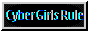
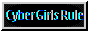

Hello and welcome to my personal archive! My name is Abigael, but I prefer the nickname Abi! I began coding this website on Replit in 2022, and I've finally decided to transfer it to Neocities! Here, I plan to log web projects, writing ventures, random pieces of media, and fashion! I'm super excited to share my coding journey with you all! I hope you enjoy my site! >.<

 
